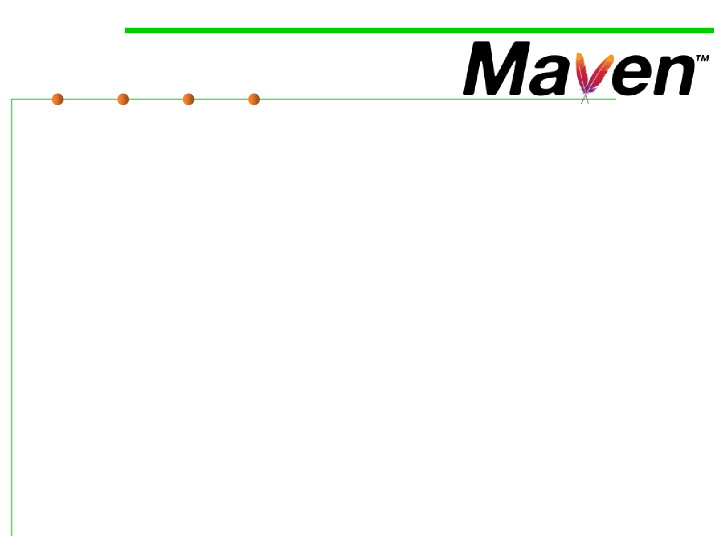

Apache Maven
2.2 Process, Systems, and Tools of Software Construction
▪ Apache Maven is a software project management and
comprehension tool.
– Based on the concept of a project object model (POM), Maven can manage
a project's build, reporting and documentation from a central piece of
information.
▪ IDE Integration: Eclipse IDE
▪ Maven’s primary goal is to allow a developer to comprehend the
complete state of a development effort in the shortest period of
time.
– Making the build process easy
– Providing a uniform build system
– Providing quality project information
– Providing guidelines for best practices development
– Allowing transparent migration to new features